Europae Laeva
One Europe, for the many.
- Slovakia and France team up to push for power bills decoupled from gas prices
- Nordic ministers to develop joint defence agreement as Sweden borrows SEK 300bn
- Guterres urges windfall tax on oil giants, cites $600 million climate fund
- Europe guards its ministries and leaves its food to hackers
- Up to 50 leaders join Rutte in Dublin in Garda's biggest operation, say Gardaí
The Harbour Ledger
News from the quay up.
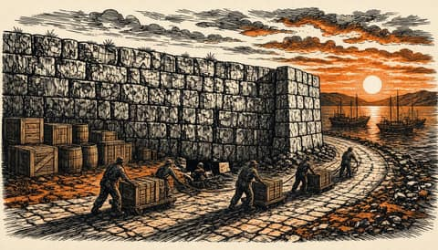
EU sanctions cut Russia trade to 58 billion euros but enforcement lags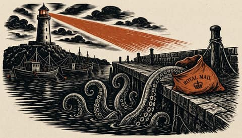
Launch the Black Sea mission while Turla sits in government mail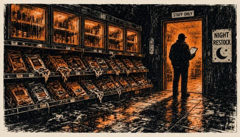
French cyber agency blames Iran's Revolutionary Guard for shop fridge attack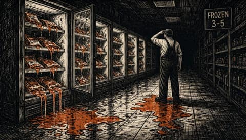
Hackers hit freezers at 700 French supermarkets, Paris blames Iran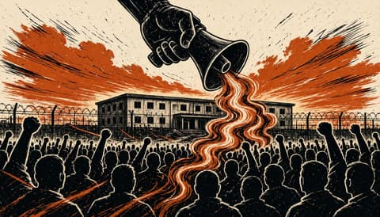
Crowd attacked National Guard base near Kyiv after torture-chamber fakes
Attacotti
Scotland's way home runs through Europe.
Europa Surgit
Europe is rising. Keep up.
- No settlement signed without Europe in the chair
- Independence Day march fills Warsaw as crowd size stays disputed
- Nuclear power should set its own price, not carry the price of gas
- The Nordics wrote Europe's defence blueprint. Copy it, all of it
- Fake bomb threats hit schools across Italy, Scotland and Ireland
Nuntii Europae
News from a European perspective.
- US says Europe will join next Ukraine talks as EU argues over who represents it
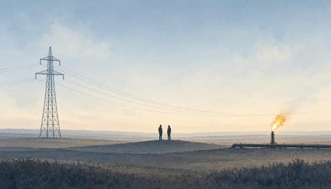
Slovak and French presidents call for overhaul of EU electricity pricing- EU leaders gather in Dublin to debate who speaks for Europe in Ukraine talks
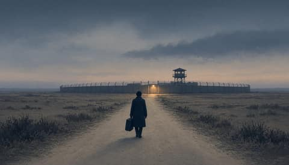
US Treasury Secretary moves to military base after death threats linked to Iran- Slovak security firm links new email espionage tool to Russian hacking group Turla
Nuntii Batavi
The Netherlands, between The Hague and Brussels.
Leo Batavus
The Netherlands decides.
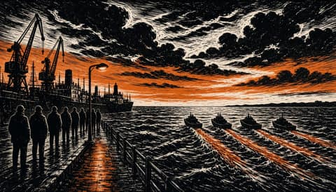
Nordic defence ministers agree to develop a joint defence agreement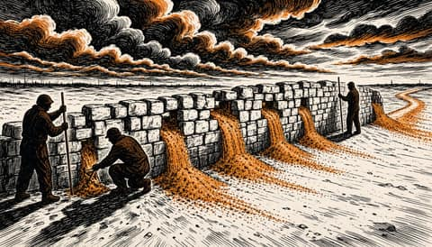
EU auditors say uneven enforcement blunts Russia sanctions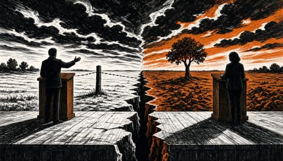
French minister Barrot calls Mélenchon a spokesman for the Kremlin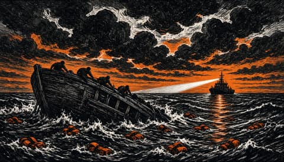
At least 20 dead in two boats off Crete, minister plans EU return hubs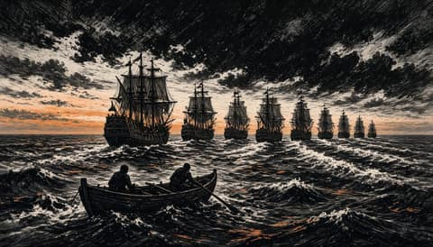
Ten JEF countries to sign naval partnership pact on 10 November
Europae Dexter
A sovereign Europe, argued plainly.
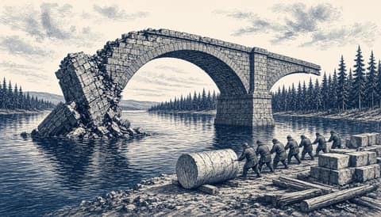
Sweden's defence plan must survive an America that leaves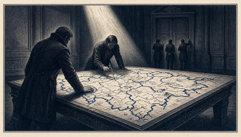
Kremlin tells Witkoff and Kushner Russia is ready to redesign European security now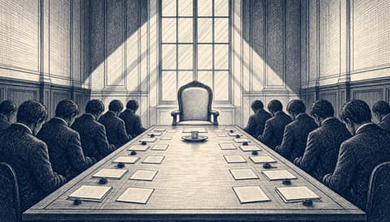
Zelenskyy gives EU until November to decide who speaks for Europe in war-end talks- Europe must pay for the army Moscow wants bargained away
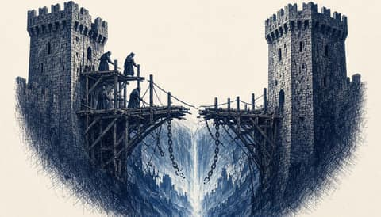
Europe has decided to leave Palantir. It has not yet built what comes next.
Europa Patriarum
A Europe of nations.
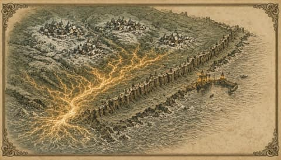
France blames Iran's Revolutionary Guard for cyber attack on 700 retail sites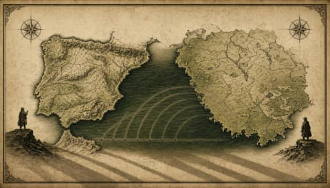
Portugal rebukes NATO chief Rutte over 'flippant' missile remarks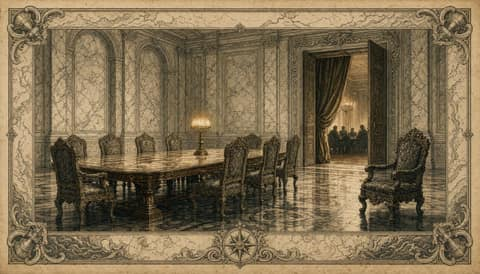
Karasin says no agreement exists for Europeans to join the Abu Dhabi talks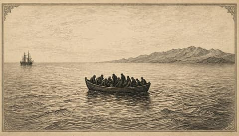
At least 20 dead in two boats off Crete as minister plans EU return hub initiative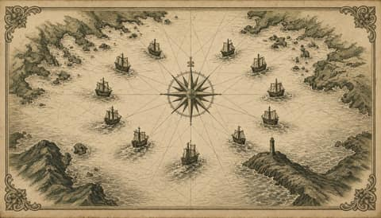
Ten northern countries sign naval partnership pact led from Britain's Northwood